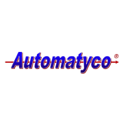
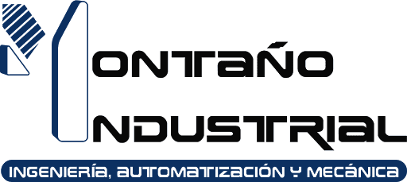

Work experience
Project Manager
Oracle

Nov/2019 - present
Ensure projects or initiatives execute to schedule, scope, and budget , coordinate cross-functional teams, communicate progress. Risk management.
- Risk management to the extent of highlighting issues early in the program
- Monitor day-to-day progress in terms of the status of the plan, coordinate all parties relevant to each project
- Manage Fusion Cloud updates project, managing remote and offshore team
- Provide governance of programs through milestone reviews, consistent status reporting, and governance calls
Project Manager
Automatyco

Jan/2018 - Oct/2019
Control and monitoring during the stages of manufacturing, assembly, programming, testing and final validation of the Project.
- Delivered the largest project in the history of the company, worth 2.5 Million USD.
- Control and monitoring of Automation and Robotization projects.
- Communicate and create reports for CEO
Manufacturing Engineer
Automatyco
Jun/2017 - Dec/2018
Focus on the design and operation of integrated systems for the production of high-quality, economically competitive products.
- Developed a new structure to subcontract external workshops, increasing manufacturing capacity by 18%.
- Developed as a team an internal software for the control of manufacturing.
Production Coordinator
Montano IND

Feb/2017 - Jun/2017
Focus on the design and operation of integrated systems for the production of high-quality, economically competitive products.
- Developed a payment planning system with suppliers.
- Eliminated overtime from the manufacturing area.
CEO´s assistant
Tiempo Libre
Jan/2016 - Dec/2016
Assist the CEO.